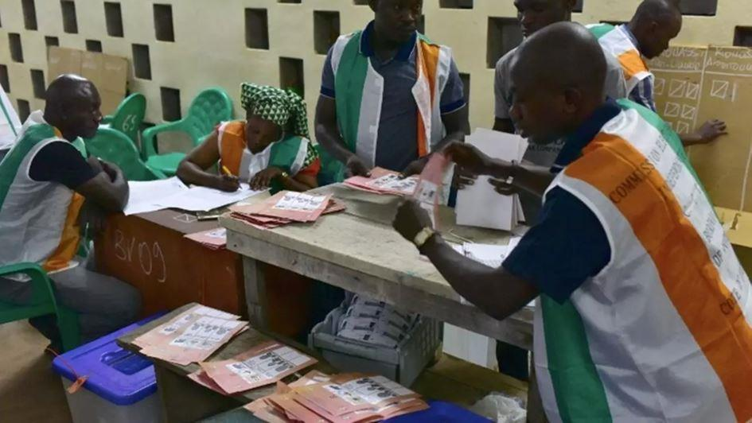

La déchéance politique : le mandat de trop du Président Alassane Ouattara
par Mickaël FELTON
Avec l’avènement du multipartisme dans les années 90, la Côte d’Ivoire a connu plusieurs turbulences politiques qui vont engrainer son histoire. Rien ne sera comme avant, « Le miracle ivoirien » des années 80 qui faisait d’elle la « Vitrine de l’Afrique de l’Ouest » et le « Pays d’Hospitalité et de Paix » est dorénavant inscrit dans un passé lointain ; elle embrassera ses pires démons. Comme la plupart des grandes nations, la Côte d’Ivoire connaît à son tour une crise depuis les années 90 jusqu’à nos jours, qu’elle a du mal à s’en séparer.
Une crise constitutionnelle et de leadership
Après la mort du père fondateur, père des indépendances Félix Houphouët Boigny en 1993, la Côte d’Ivoire connaîtra ses premiers soubresauts avec l’arrivée au pouvoir du dauphin légitime Henri Konan Bédié, en son temps Président du Parlement ivoirien.
Selon la Constitution de 1960, l’article 11 stipule que : « En cas de vacance de la présidence de la République par décès, démission ou empêchement absolu, les fonctions du président de la République sont provisoirement exercées par une personnalité choisie au sein de l’Assemblée nationale par son président.
Si la durée du mandat présidentiel restant à courir est égale ou inférieure à douze mois, il n’y a pas lieu à élection du président de la République. Le président désigné par le président de l’Assemblée nationale devient, de plein droit président de la République, avec les rangs, pouvoirs et prérogatives attachés à ce titre.
Si la durée du mandat présidentiel restant à courir est supérieure à douze mois, il est procédé à de nouvelles élections présidentielles. Le mandat du nouveau président de la République expire en même temps que prennent fin les pouvoirs de l’Assemblée nationale. »
Visiblement, les textes sont clairs pour tous. Toutefois, certains barons du vieux parti PDCI-RDA se sentirent lésés et virent d’un mauvais œil la prise de pouvoir par Henri Konan Bédié. Ils entreprendront alors des manœuvres politiques pour nuire et discréditer le nouveau Président. On verra, à cette époque la création du Rassemblement des Républicains (RDR) qui regroupera tous les transfuges du vieux parti.
En Décembre 1999, Le Président Henri Konan Bédié est évincé du pouvoir par une junte militaire et obligé de s’expatrier en France.
Après cette transition militaire, les élections sont organisées. Plusieurs candidats tels que Henri Konan Bédié et Alassane Ouattara voient leur candidature refusée par le Conseil Constitutionnel sur la base de la Constitution du 23 juillet 2000 qui stipule en son article 35 que : « Le Président de la République est élu pour cinq ans au suffrage universel direct. Il n'est rééligible qu'une fois. Le candidat à l'élection présidentielle doit être âgé de quarante ans au moins et de soixante-quinze ans au plus. Il doit être ivoirien d'origine, né de père et de mère eux-mêmes ivoiriens d'origine.
Il doit n'avoir jamais renoncé à la nationalité ivoirienne.
Il ne doit s'être jamais prévalu d'une autre nationalité.
Il doit avoir résidé en Côte d'Ivoire de façon continue pendant cinq années précédant la date des élections et avoir totalisé dix ans de présence effective.
Pour autant, l'obligation de résidence indiquée au présent article ne s'applique pas aux membres des représentations diplomatiques et consulaires, aux personnes désignées par l'État pour occuper un poste ou accomplir une mission à l'étranger, aux fonctionnaires internationaux et aux exilés politiques.
Le candidat à la Présidence de la République doit par ailleurs présenter un état complet de bien-être physique et mental dûment constaté par un collège de trois médecins désignés par le Conseil constitutionnel sur une liste proposée par le Conseil de l'Ordre des Médecins. Ces trois médecins doivent prêter serment devant le Conseil constitutionnel. Il doit être de bonne moralité et d'une grande probité. Il doit enfin déclarer son patrimoine et en justifier l'origine. »
En octobre 2000, après des élections difficiles au cours desquelles il y aura malheureusement des morts ; l’ancien opposant historique de Félix Houphouët Boigny, Laurent Gbagbo remportera ces élections face au Général Robert Guei.
Il apparaît clairement, que les manipulations constitutionnelles disproportionnées et abusives ont été des causes profondes des crises ivoiriennes passées mais également plus récentes.
Ainsi, dans la nuit du 18 au 19 septembre 2002, une tentative de coup d’État éclate en Côte d’Ivoire, provoquant la scission du pays en deux zones géographiques. Une zone nord, administrée par la rébellion avec comme leader Guillaume Soro et le Sud par le Président Laurent Gbagbo. Les héritiers d’Houphouët-Boigny ouvrent une crise qui mettra près de 10 ans à se refermer.
Le mirage politique ivoirien, Alassane OUATTARA
Après neuf ans à la tête de la Côte d’Ivoire, Alassane Ouattara crée la surprise. A 78 ans, il est candidat à un troisième mandat présidentiel. Pourtant, en trente ans de vie politique, il affronte tous les obstacles, sans écorner son image à l’international.
Retour sur le parcours d’un pionnier paradoxal, qui pourrait bien s’être porté lui-même un coup fatal.
Après avoir connu plusieurs injustices de la part de ses opposants politiques durant environ une vingtaine d’années, le candidat Alassane Ouattarra est enfin élu, en 2010, à la Présidence de la République dans des conditions très difficiles qui occasionneront la mort de 3.000 ivoiriens.
Beaucoup ont pensé qu’il ferait l’exception en étant un dirigeant digne et un homme de parole. On croyait les différentes crises ivoiriennes dans un passé lointain et nous avons commencé à rêver en l’avenir et en l’émergence de notre beau pays la Côte d’Ivoire sous sa mandature. De 2010 jusqu’à maintenant, nous avons connu des avancées remarquables de développement et un semblant de paix. Cependant, le pays renoue avec ses vieux démons à nouveau à l’orée des élections électorales du 31 octobre 2020 qui sont censées voir un rajeunissement de la classe politique ivoirienne.
Après sa réélection en 2015, un changement de Constitution sera soumis à referendum. Sur ce, certaines dispositions seront modifiées en ces termes dans les articles 183, je cite : « La législation actuellement en vigueur en Côte d’Ivoire reste applicable, sauf l’intervention de textes nouveaux, en ce qu’elle n’a rien de contraire à la présente Constitution. » Et, l’article 55 stipulant que : « Le Président de la République est élu pour cinq ans au suffrage universel direct. Il n’est rééligible qu’une fois. Il choisit un vice-Président de la République, qui est élu en même temps que lui. Le candidat à l’élection présidentielle doit jouir de ses droits civils et politiques et doit être âgé de trente-cinq ans au moins. Il doit être exclusivement de nationalité ivoirienne, né de père ou de mère ivoirien d’origine. »
Ainsi, l’article 35 de l’ancienne constitution de 2000 devenu article 55 dans la constitution en cours (2016), arrêtant la limitation des mandats à deux, continue de produire ses effets. Aussi, suivant la législation en vigueur, le Président de la République qui est à son deuxième mandat ne peut en briguer un autre, dès lors que la Loi Fondamentale le lui interdit.
Ainsi, aux yeux du constitutionaliste, une candidature d’Alassane Ouattara dans le contexte actuel violerait la Constitution dans sa lettre et dans son esprit. En dehors de la légalité ou non d’un nouveau mandat, il y a l’engagement moral pris devant le parlement ivoirien, le 5 mars dernier, de ne pas se porter candidat à l’élection présidentielle de 2020. Un engagement salué par tous les partenaires et qui devait donner au président le couronnement politique d’une présidence en deux mandats où il aura véritablement servi à faire bouger les lignes économiques grâce à un programme ambitieux d’investissements dans les infrastructures. Au soir de son deuxième mandat, l’ancien haut fonctionnaire de la BCEAO et haut commis du FMI devrait choisir entre la démocratie et l’héritage politique et économique laissé à ses cadets ou, à l’inverse, la perpétuation du pouvoir sans possibilité de rentrer dans l’Histoire.
Dix candidatures à l'élection présidentielle ivoirienne du 25 octobre ont été validées, mercredi 9 septembre, par le Conseil constitutionnel, dont celle du président sortant, Alassane Ouattara, qui brigue un second mandat de cinq ans. Les Sages ont donc écarté 23 des 33 dossiers présentés auprès de la Commission électorale indépendante (CEI). Mais tous les ténors de l’opposition ivoirienne qui avaient fait acte de candidature ont été retenus. Tour d’horizon des dix prétendants à la magistrature suprême.
En somme, les mêmes causes produisent les mêmes effets. Les manipulations constitutionnelles disproportionnées, abusives et taillées sur mesure pour s’arranger ou pour s’éterniser au pouvoir en disqualifiant des potentiels candidats sont des causes susceptibles de conflits. Il est temps de laisser la place aux jeunes générations. La prochaine crise ivoirienne sera une crise générationnelle, si ce n’est le cas actuellement. Les anciens doivent impérativement rendre leur tablier et prendre leur retraite politique. Disons que, les présidents Henri Konan Bedie, Alassane Ouattara, Laurent Gbagbo sont dépassés, ils font partie du passé sombre de la Côte d’Ivoire et non de son avenir.
Il apparaît impératif d’appliquer la seconde constitution ivoirienne, dans laquelle des dispositions ont été prises pour limiter l’âge et prennent en compte l’état de santé et la moralité des candidats pour la magistrature suprême. Or, par des subterfuges trompeurs, les vieux leaders semblent vouloir lever les verrous qui les interdisent de se représenter à des élections en Côte d’Ivoire.
Partager cette page